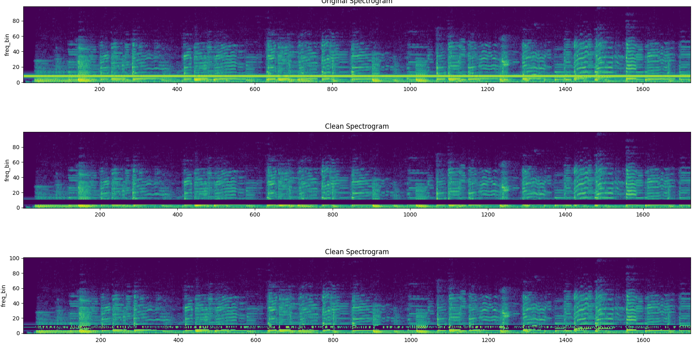
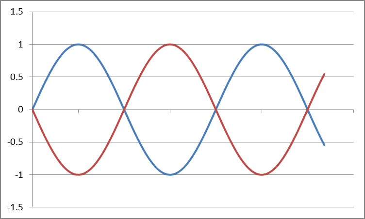
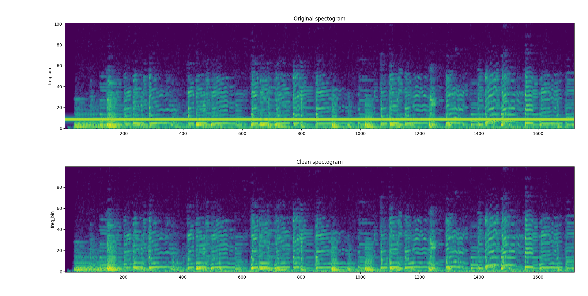

En tone, fjernet i programvare
En oppgave i analog elektronikk ba oss bygge en båndstoppkrets for å fjerne en konstant tone fra et musikkopptak. Jeg løste det i programvare, først med en spektrogrambasert båndstopp, og deretter med fasekansellering, og sammenlignet de to side om side. Fasekansellering vant; rapporten er på norsk og ligger i repoet som PDF.
Problemet
En musikkfil var blitt ødelagt av en enkelt tone med konstant frekvens, den typen ting som dukker opp som en lys horisontal linje nederst i et spektrogram. Oppgaven: fjern den tonen med minimal skade på musikken under.
Metode 1: spektrogram-båndstopp
- Ta spektrogrammet av inngangen.
- Finn frekvensbinet med mest energi i det aktuelle båndet, som er senteret av tonen.
- Nullstill (eller demp) midtbinet og en liten ring rundt det for å absorbere kvantiseringsslakk i spektrogrammet.
- Invers-transformer tilbake til tidsdomenet.
Det fungerer, og lyden er ren, men spektrogrammet viser en tydelig tom plass der tonen pleide å være: en tynn svart stripe midt i musikken. Noe av originalsignalet ble kastet sammen med støyen.

Metode 2: fasekansellering
Siden tonen som skal fjernes bare er en addert sinus, kan du kansellere den ved å legge til en ny sinus med samme frekvens og amplitude, faseforskjøvet 180°. Estimer amplitude, frekvens og fase fra opptaket, generer inversen, og legg sammen. I teorien forsvinner tonen, og originalmusikken står helt intakt.

I praksis var det omtrent det som skjedde. Utgangsspektrogrammet ser identisk ut med originalen overalt unntatt der tonen pleide å være, og selv der er musikkspekteret rundt bevart. Lyden høres naturlig ut, ingen spor av bearbeidingen slipper gjennom.

Det jeg lærte
At et båndstoppfilter er det riktige svaret på spørsmålet «fjern et smalt frekvensbånd», og det gale svaret på spørsmålet «fjern en konstant sinus». Sistnevnte har mer struktur enn førstnevnte, og en kanselleringstilnærming utnytter denne strukturen fullt ut. Når problemet gir deg så mye struktur, bruk et øyeblikk på å lete etter den før du tar frem det generiske filteret.
Rapport
Hele den norske kursrapporten (figurer, utledninger, før/etter-spektrogrammer) ligger i repoet: